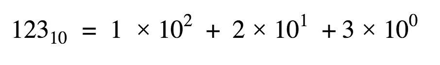
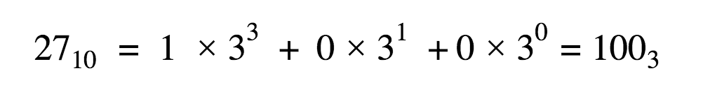

Normally, in math classes, we work with numbers that look like this: 123. But what does that really mean? Well, we typically tend to represent numbers in their base 10 form. This means that:
But we can choose other bases as well. For example, if we choose base 3:
In the above conversion, we found how many of the largest power of 3 fit in the number. Then, we found the counts for rest of the powers down to zero, and put the counts together.